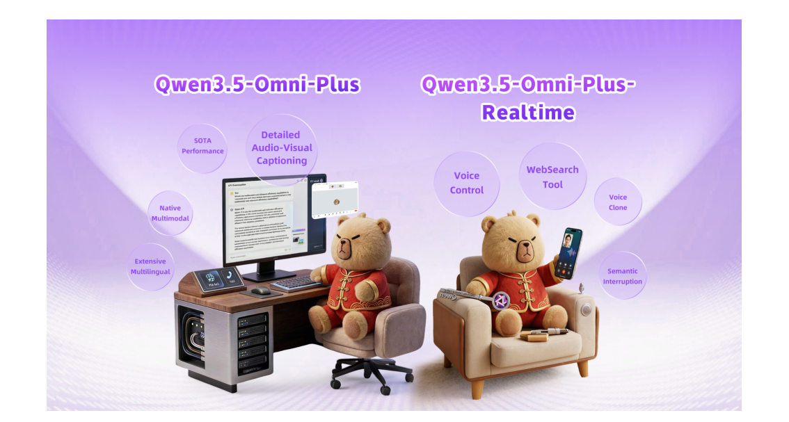
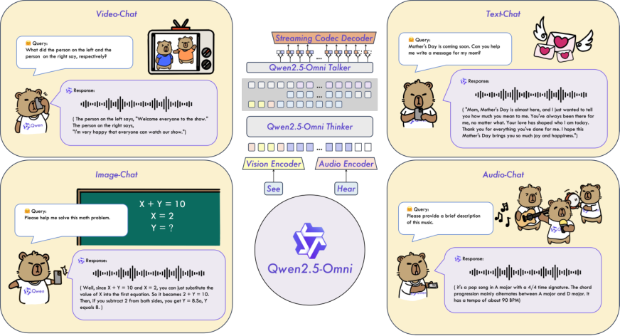
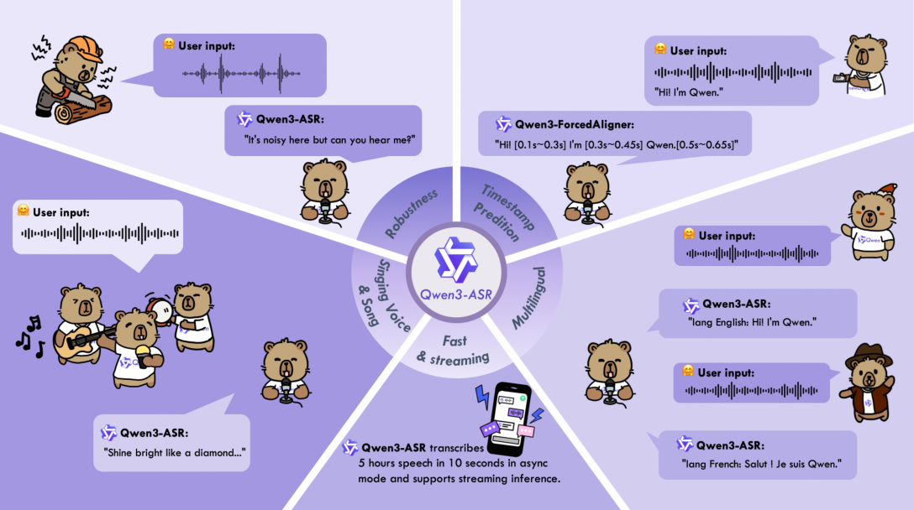
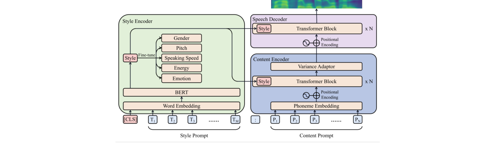
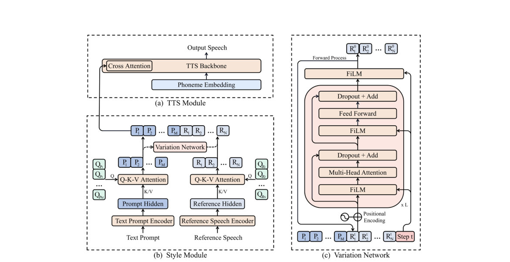
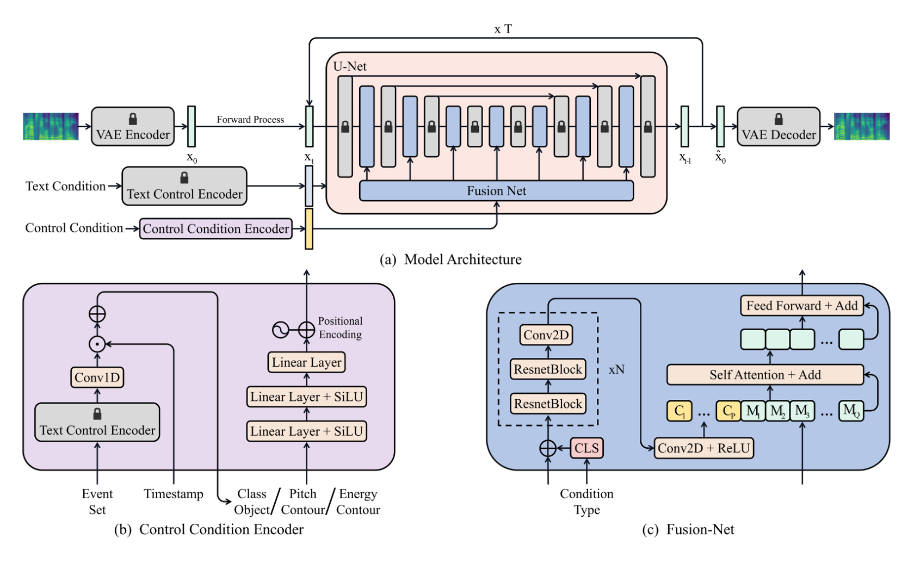

About Me
I am a Multimodal Algorithm Researcher at the Qwen Team (通义千问团队) of Alibaba Group (阿里巴巴), where I lead Omni Pre-training in the Omni & Audio Group. My research interest includes audio understanding and omni-modal foundation models. I have published papers22 with citations35,672 at top-tier international AI conferences such as ICLR, ACL, AAAI and ACM MM. If you are seeking any form of academic cooperation, please feel free to email me at A6769408@hotmail.com. We are hiring interns!
I am the founder and core contributor of the natively end-to-end omni-modal foundation model series Qwen-Omni (Qwen2.5-Omni, Qwen3-Omni, Qwen3.5-Omni, Qwen3.8-Omni), which has grown from an omni-modal model into a native omni-modal agent, and whose open-source releases each ranked #1 on the HuggingFace Trending leaderboard, with a cumulative citations1,870 across the series. I also contributed to the products derived from it — Qwen3-ASR, Qwen3-TTS, Qwen3-LiveTranslate, Qwen-Music, Qwen-Audio-VAE and Qwen3.8-LiveTranslate.
Before joining Qwen, I studied at Jilin University, where I received my B.S. degree in Automation Engineering in 2021, and then at the Institute of Computing Technology, Chinese Academy of Sciences, where I received my M.S. degree in Computer Science and Technology in 2024. Along the way, I did algorithm internships at Baidu, Meituan, Microsoft Research Asia and Toshiba, working on NLP, speech and audio algorithms, and spent my final semester as a multimodal algorithm intern at the Qwen Audio Team of Alibaba, which grew into my current role at Qwen.
🔥 News
- 2026.09:🎉 Qwen3.8-Omni is released: a natively end-to-end omni-modal agent, together with the open-source agent stack Qwen-MM-Plugins and Qwen-Live-Harness!
- 2026.09:🎉 Qwen3.8-LiveTranslate is released: simultaneous interpretation is recast as a single interleaved audio–text stream, covering 60 languages, with average lagging cut from 2.8s to 2.3s, plus real-time speaker diarization and same-frame bilingual subtitles.
- 2026.07:🎉 Qwen-Music and Qwen-Audio-VAE technical reports are released.
- 2026.04:🎉 Qwen3.5-Omni technical report is released: SOTA on 215 audio and audio-visual benchmarks.
- 2026.01:🎉 Qwen3-TTS is released with voice clone, voice design and natural-language voice control, receiving 11,000+ GitHub stars on the day of release.
- 2026.01:🎉 Qwen3-ASR technical report is released, with 2,500+ GitHub stars on the day of release.
- 2025.09:🎉 Qwen3-Omni technical report: 2,000+ GitHub stars on the day of release and ranked #1 on HuggingFace Trending!
- 2025.09:🎉 Qwen3-LiveTranslate is released: real-time multimodal interpretation in 18 languages with vision-enhanced understanding and 3-second latency, ranking first on multiple Chinese–English and multilingual speech translation benchmarks.
- 2025.03:🎉 Qwen2.5-Omni technical report: 2,000+ GitHub stars on the day of release and ranked #1 on HuggingFace Trending!
- 2024.01:🎉 PromptTTS 2 is accepted by ICLR 2024, adding an LLM-based description pipeline and a Variation Network for diverse timbres.
- 2023.06:🎉 PromptTTS — controlling text-to-speech with natural-language descriptions — is presented at ICASSP 2023; the demo and the PromptSpeech dataset are released.
📝 Publications
* denotes co-first author or core contributor. Full publication list at Google Scholar.
🌐 Omni-Modal Foundation Models

Qwen3.8-Omni: Towards Native Omni-Modal Agents
41 core contributors including Zhifang Guo*
Paper | Blog | Demo | Plugins | Harness | citations—
- Native omni-modal agent: advances omni models from perceiving and interacting to planning tasks, calling tools and completing real-world multimedia productivity work such as agentic video editing and film narration.
- Performance: improves the average score by more than 25% over Qwen3.5-Omni-Plus across 29 evaluations, while cutting the estimated API input cost per hour of audio and audio-visual content by more than 98% and 93%.
- Open-Source Impact: the open-source agent stack Qwen-MM-Plugins
and Qwen-Live-Harness
.

42 core contributors including Zhifang Guo*
Paper | Blog | Demo | citations—
- SOTA Performance: achieving SOTA on 215 audio and audio-visual understanding, reasoning and interaction subtasks/benchmarks, surpassing Gemini-3.1 Pro in key audio tasks.
- Long Context: supporting up to 256k tokens — 10 hours of audio or 400 seconds of 720P video — with semantic interruption and end-to-end controllable voice dialogue.

Jin Xu*, Zhifang Guo*, et al.
Paper | GitHub | Blog | Demo | citations—
- Natively omni-modal pre-training: an end-to-end multilingual omni model without performance degradation compared with single-modality models.
- Powerful Performance: SOTA on 32 benchmarks and overall SOTA on 22 across 36 audio and audio-visual benchmarks, outperforming Gemini-2.5-Pro, Seed-ASR and GPT-4o-Transcribe.
- Open-Source Impact: ranked #1 on the HuggingFace Trending leaderboard on release.


Jin Xu*, Zhifang Guo*, et al.
Paper | GitHub | Blog | Demo | citations—
- Thinker–Talker architecture: perceives text, images, audio and video while streaming text and natural speech responses, with the Time-aligned Multimodal RoPE (TMRoPE) synchronizing video timestamps with audio.
- Open-Source Impact: ranked #1 on the HuggingFace Trending leaderboard on release.

🎙 Speech Recognition

Xian Shi*, Xiong Wang*, Zhifang Guo*, et al.
Paper | GitHub | Blog | Demo | citations—
- Production-ready recognition: Qwen3-ASR-0.6B reaches 2,000× throughput at a concurrency of 128, and both models unify streaming and offline inference with long-audio transcription.
- Open-Source Impact: outperforms strong open and closed models such as Whisper in real-world audio.

🗣️ Speech Translation

Qwen Team
Blog | Demo | citations—
- One stream instead of three models: recasts simultaneous interpretation as a single interleaved audio–text causal stream rather than an ASR–MT–TTS cascade, with no intermediate transcript.
- Lower latency, same timbre: average lagging cut from 2.8s to 2.3s, and each speaker keeps their own voice.
- Coverage: 85.7 xCOMET-XXL on FLEURS across 70 translation directions, with real-time speaker diarization and same-frame bilingual subtitles.

Qwen Team
Blog | Demo | citations—
- Streaming interpretation: built on the Qwen3.5-Omni Thinker–Talker architecture, with chunk-wise audio/video input and Readable Unit tags that set the synthesis granularity — the first-character latency drops by 3.45s and the average character latency by 1.88s over Qwen3-LiveTranslate-Flash, reaching 2.8s end-to-end.
- Broader coverage: 60 languages for input speech and output text, and 29 languages with translated speech output (up from 18 / 10), covering multilingual meetings, livestream localisation and outbound travel.
- Voice cloning & hotwords: dynamic cross-lingual cloning keeps the speaker’s own timbre across languages, and up to 1,000 hotwords keep names, brands and technical terms right.
- Vision-aware: uses on-screen text, objects and scene context to resolve ambiguous words, as shown in the visual-disambiguation demos.
🎨 Controllable Speech Synthesis

PromptTTS: Controllable Text-to-Speech with Text Descriptions
Zhifang Guo*, Yichong Leng*, Yihan Wu, Sheng Zhao, Xu Tan
Paper | Demo | citations—
- Pioneering work: controls the style and timbre of synthesized speech with natural-language descriptions, using separate style and content encoders together with the PromptSpeech dataset.
- Academic Impact: PromptTTS and PromptSpeech have been widely adopted as a benchmark following the rise of prompt-based TTS.

PromptTTS 2: Describing and Generating Voices with Text Prompt
Yichong Leng*, Zhifang Guo*, Kai Shen, Xu Tan, Zeqian Ju, Yanqing Liu, Yufei Liu, Dongchao Yang, Leying Zhang, Kaitao Song, Lei He, Xiang-Yang Li, Sheng Zhao, Tao Qin, Jiang Bian
Paper | GitHub | Demo | citations—
- Automatic description pipeline: leverages large language models to generate speech textual descriptions, addressing the imbalance between text and speech data in PromptTTS.
- Resolving the one-to-many issue: a Variation Network generates multiple diverse timbres while remaining consistent with a given description.
🎵 Controllable Audio Generation

Audio Generation with Multiple Conditional Diffusion Model
Zhifang Guo, Jianguo Mao, Rui Tao, Long Yan, Kazushige Ouchi, Hong Liu, Xiangdong Wang
Paper | Demo | citations—
- Fine-grained control: augments pre-trained text-to-audio models with a Control Condition Encoder that accepts the event set, timestamp, class object, pitch contour and energy contour, enabling temporal order control and more accurate descriptions.
- Fusion-Net: injects the control embedding into every layer of the U-Net of the conditional latent diffusion model, outperforming state-of-the-art TTA models on AudioCaps in both objective and subjective evaluations.
📄 Other Publications
* denotes co-first author or core contributor.
- Technical Report 2026Qwen-Music Technical Report,
- Technical Report 2026Qwen-Audio-VAE Technical Report,
- Technical Report 2026Qwen3-TTS Technical Report,
- Technical Report 2025Qwen3-VL Technical Report,
- Technical Report 2025Qwen3 Technical Report,
- Technical Report 2025Qwen2.5-VL Technical Report,
- Technical Report 2024Qwen2.5 Technical Report,
- Technical Report 2024Qwen2-Audio Technical Report,
- ACL 2025Inserter: Speech Instruction Following with Unsupervised Interleaved Pre-training,
- ACL 2025Analyzing and Mitigating Inconsistency in Discrete Audio Tokens for Neural Codec Language Models,
- Interspeech 2024Speech Token Prediction via Compressed-to-fine Language Modeling for Speech Generation,
- ACM MM 2024 · OralAdvancing Multi-grained Alignment for Contrastive Language-Audio Pre-training,
- Interspeech 2024Leveraging Language Model Capabilities for Sound Event Detection,
- DCASE 2022A Hybrid System of Sound Event Detection Transformer and Frame-wise Model for DCASE 2022 Task 4,
🎖 Honors and Awards
- 2024Outstanding Graduate at the Municipal Level (Beijing)
- 2024Chinese Academy of Sciences Director's Scholarship (Top 1%)
- 2022DCASE 2022 Challenge Task 4 Judges' Award (Sole Recipient)
- 2022University of Chinese Academy of Sciences Academic Excellence Scholarship
- 2021Outstanding Graduate at the University Level
- 2021University of Chinese Academy of Sciences Undergraduate Scholarship; First-Class Scholarship (Top 1%)
- 2020Qi-Anxin Scholarship (Top 1%); First-Class Scholarship (Top 1%)
- 2019Samsung Scholarship (Top 1%); National Scholarship (Top 1%)
- 2018National Scholarship (Top 1%)
📖 Educations
💼 Internships & Collaborations
- 2024Multimodal Algorithm Intern, Qwen Audio Team, Alibaba (Supervised by Jin Xu, led by Junyang Lin)
- 2023Audio Algorithm Intern, R&D Center, Toshiba (Led by Kazushige Ouchi)
- 2022Speech Algorithm Collaboration, Machine Learning Group, Microsoft Research Asia (Supervised by Yichong Leng, led by Xu Tan)
- 2022Speech Algorithm Intern, Speech Interaction Department, Meituan (Supervised by Dan Wu, led by Ke Ding)
- 2022NLP Algorithm Intern, AI Product R&D Department, Baidu (Supervised by Weiwei Zhang)